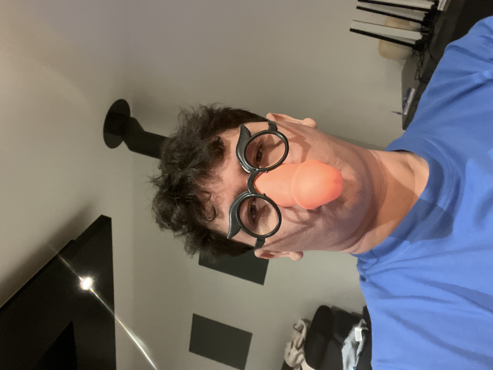

Bienvenue sur ma page personnelle
Je m'appelle Yoan Werts j'ai 20 ans et ci-dessous je vais vous partagez mes passions !
Biographie
Je suis un passionné d'informatique plutôt de jeu vidéo depuis tout petit je suis dedans, tout d'abord sur la ps2, puis la psp et les choses ont vraiment commencé il y à 8ans avec la ps4 c'est la que j'ai commencé à vraiment geeker. En 2017 je passe sur pc une ptite année avant le COVID. C'est durant le confinement que j'ai le plus séché les jeux. Et maintenant je suis toujours à fond dedans tout en évitant de négliger mes proches et le SPORT ! Mon deuxième centre d'interets ce sont les voitures mais ça vous le retrouverez dans la page galeries photos. J'apprécie particulièrement le fait de sortir avec des copains et d'aller à des rasso. Voila tu en sais un peu plus sur mes centres d'interêts.